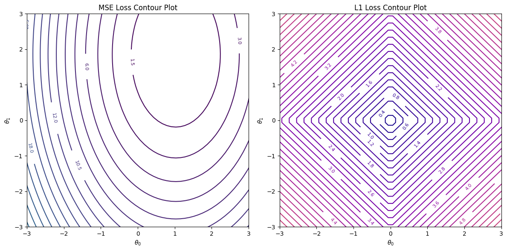
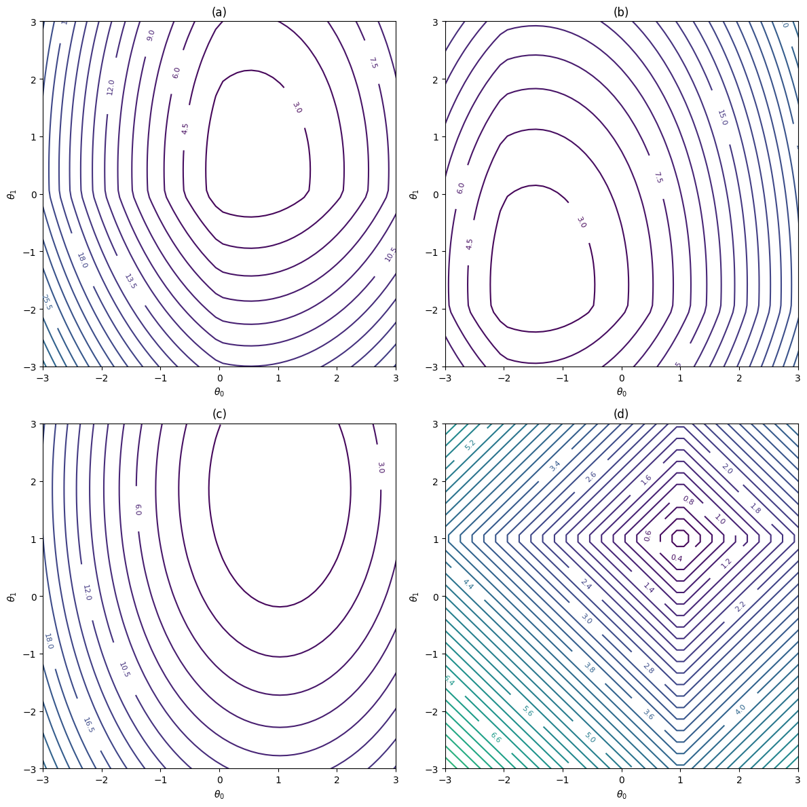

Contributors: Dr. Ahmad Mustafa, Dr. Motaz Alfarraj, Dr. Ashraf Alattar, Dr. Chen Zhou
Teaching Assistants with remarkable contributions include: Kuo-Wei Lai, Wuyang Du, Shiva Mahato, Michael Zhou, Ninghan Zhong
Disclaimer: All content of these notes are part of this course at Georgia Tech. Any re-use or distribution is not permitted without pre-approved permission. All these notes belong to, created by, and copyrighted for Ghassan AlRegib and Mohit Prabhushankar, Georgia Tech, 2021–2028.
License: These lecture notes are licensed under the Creative Commons Attribution-NonCommercial-ShareAlike 4.0 International License.
Errata: Please submit any errata you find using the following form: Errata Form for FunML Textbook or visit: https://forms.office.com/r/fbg9dMWPgY
1.1 Overview
This lecture extends linear regression to settings where the relationship between inputs and outputs is nonlinear. We will see that many nonlinear models can still be written in a form that is linear in the parameters by introducing a feature mapping \(\phi(\cdot)\). In particular, polynomial regression creates nonlinear behavior by expanding the original inputs into polynomial features, while keeping the prediction rule in the simple form \(\hat{y}=\boldsymbol{\theta^T}\phi(\boldsymbol{x})\).
The first theme of the lecture is high-degree polynomial regression. We motivate why polynomial features are useful, how they capture curvature and interactions (cross terms) in multi-feature datasets, and why increasing the polynomial degree increases model capacity. We emphasize the core trade-off: higher degree can improve expressiveness, but it also increases the number of features rapidly and can lead to overfitting, where the model fits noise rather than the underlying signal.
The second theme is training by gradient descent. While the Normal Equation provides a closed-form solution for least squares regression, it becomes computationally expensive and numerically fragile as the feature dimension grows (especially after polynomial expansion). This motivates iterative optimization. We review the gradient descent update rule \(\boldsymbol{\theta}^{(t+1)} = \boldsymbol{\theta}^{(t)} - \alpha \nabla_{\boldsymbol{\theta}} L(\boldsymbol{\theta}^{(t)})\), interpret the learning rate \(\alpha\) as a step size, and compare Batch, Stochastic, and Mini-batch gradient descent as practical alternatives with different stability and computational trade-offs. We also preview common optimization considerations, including convergence behavior, learning rate selection, and the role of learning-rate schedules.
The third theme is regularization. Polynomial regression can easily become a high-capacity model, so controlling complexity is essential for good generalization. We introduce regularization as adding a penalty term to the least squares objective, typically written as \[\min_{\boldsymbol{\theta}}\ \frac{1}{N}\sum_{i=1}^{N} \left(\boldsymbol{\theta}^T \boldsymbol{\phi}(\mathbf{x}_i) - y_i\right)^2 + \lambda\,\Omega(\boldsymbol{\theta}).\] We discuss how \(L_2\) regularization (Ridge) tends to shrink weights smoothly and improve numerical stability, while \(L_1\) regularization (Lasso) can encourage sparsity and act as a form of feature selection. Conceptually, regularization shifts the solution toward simpler models, reducing variance and improving test-time performance.
Overall, the lecture proceeds from constructing nonlinear models via polynomial feature maps, to optimizing their parameters efficiently with gradient-based methods, and finally to preventing overfitting through regularization. By the end, you should be able to explain how polynomial regression is built, how it is trained in practice, and why regularization is often necessary when model capacity grows.
1.2 Nonlinear Regression
When the relationship between the input and output variables is not linear, a standard linear regression model is insufficient. Instead, we introduce a nonlinear regression framework through a feature transformation.
Rather than directly using the original feature matrix \(\mathbf{X}\), we map each input vector \(\mathbf{x}_i\) into a higher-dimensional feature space using a nonlinear transformation \(\boldsymbol{\phi}(\mathbf{x}_i)\). The regression model then becomes
\[y_i = \boldsymbol{\theta}^T \boldsymbol{\phi}(\mathbf{x}_i)\]
Although this model can represent nonlinear relationships in the original input space, it remains linear in the parameters \(\theta\). This is an extension of the linear model in a transformed feature space, as illustrated in Figure 8.1.

More expressive nonlinear regression models use multiple basis functions:
\[y_i = \theta_0 + \theta_1\phi_1(\mathbf{x}_i) + \theta_2\phi_2(\mathbf{x}_i) + \dots + \theta_m\phi_m(\mathbf{x}_i), \quad i = 1,\dots,N\]
In matrix form, if we define the transformed design matrix
\[\boldsymbol{\Phi} = \begin{bmatrix} \boldsymbol{\phi}(\mathbf{x}_1)^T \\ \boldsymbol{\phi}(\mathbf{x}_2)^T \\ \vdots \\ \boldsymbol{\phi}(\mathbf{x}_N)^T \end{bmatrix}\]
then the model becomes
\[\boldsymbol{\hat{y}} = \boldsymbol{\Phi} \boldsymbol{\theta}\]
This formulation allows us to reuse all tools from linear regression (least squares, gradient descent, regularization) while modeling nonlinear relationships through feature engineering.
1.3 Polynomial Regression
A common and important special case of nonlinear regression is polynomial regression. This method is used when the relationship between the input and output exhibits curvature that cannot be captured by a linear function. Instead of assuming linear dependence on the original feature, we expand the input using polynomial basis functions.
For a single input feature \(x\), the feature mapping is defined as
\[\boldsymbol{\phi}(\boldsymbol{x_i}) = [1, x_i, x_i^2, x_i^3, \dots, x_i^m]^T\]
where \(m\) is the degree of the polynomial. The regression model becomes
\[\hat{y}_i = \theta_0 + \theta_1 x_i + \theta_2 x_i^2 + \dots + \theta_m x_i^m\]
Although the model is nonlinear in the input variable \(x\), it remains linear in the parameters \(\boldsymbol \theta\), which allows us to use all linear regression optimization techniques.

In matrix form, the transformed design matrix becomes
\[\mathbf{\Phi} = \begin{bmatrix} 1 & x_1 & x_1^2 & \dots & x_1^m \\ 1 & x_2 & x_2^2 & \dots & x_2^m \\ \vdots & \vdots & \vdots & \ddots & \vdots \\ 1 & x_N & x_N^2 & \dots & x_N^m \end{bmatrix}\]
so that
\[\hat{\mathbf{y}} = \mathbf{\Phi}\boldsymbol{\theta}\]
This framework naturally extends to multiple input features, where polynomial terms also include cross-products such as \(x_1 x_2\), \(x_1^2 x_2\), etc., leading to higher expressive power but also rapid growth in feature dimensionality.
1.3.1 High-Degree Polynomial Regression
When the input vector has multiple features, polynomial regression extends the feature mapping to include powers and interactions between features. Suppose each data point has \(P\) input features,
\[\mathbf{x}_i = [x_{i,1}, x_{i,2}, \dots, x_{i,P}]^T.\]
A polynomial feature mapping of degree \(m\) includes all monomials whose total degree is less than or equal to \(m\). For example, with \(P = 2\) features and polynomial degree \(m = 2\), the model becomes
\[y_i = \theta_0 + \theta_1 x_{i,1} + \theta_2 x_{i,2} + \theta_3 x_{i,1}^2 + \theta_4 x_{i,2}^2 + \theta_5 x_{i,1} x_{i,2} + \epsilon_i.\]
Here, the term \(x_{i,1}x_{i,2}\) represents an interaction between features, allowing the model to capture more complex relationships.
More generally, polynomial regression with multiple features constructs a feature vector
\[\phi(\mathbf{x}_i) = [1, x_{i,1}, \dots, x_{i,P}, x_{i,1}^2, x_{i,1}x_{i,2}, \dots, x_{i,P}^m]^T,\]
leading again to a linear model in the parameters,
\[\hat{y}_i = \boldsymbol{\theta}^T \phi(\mathbf{x}_i).\]
Stacking all transformed feature vectors produces the polynomial design matrix
\[\boldsymbol{\Phi} = \begin{bmatrix} \phi(\mathbf{x}_1)^T \\ \phi(\mathbf{x}_2)^T \\ \vdots \\ \phi(\mathbf{x}_N)^T \end{bmatrix}, \qquad \hat{\mathbf{y}} = \boldsymbol{\Phi}\boldsymbol{\theta}.\]
However, the number of features grows rapidly with both \(P\) and \(m\). The total number of polynomial terms (including interactions) is
\[\binom{P + m}{m},\]
which can become very large even for moderate \(P\) and \(m\). For example, a dataset like IRIS with \(P=4\) features and degree \(m=4\) already produces \(70\) polynomial features. This rapid growth increases computational cost and the risk of overfitting, motivating the need for regularization and more efficient optimization methods.
1.3.2 Least Squares Cost Function
The least squares loss for polynomial regression is
\[L(\boldsymbol{\theta}) = \frac{1}{N} \sum_{i=1}^{N} (\hat{y}_i - y_i)^2 = \frac{1}{N} \sum_{i=1}^{N} (\boldsymbol{\theta}^T \phi(\mathbf{x}_i) - y_i)^2.\]
Here, \(L(\boldsymbol{\theta})\) is the loss function dependent on the model parameters \(\boldsymbol{\theta}\). The term \(\frac{1}{N}\sum_{i=1}^N\) computes the mean squared error across all \(N\) data points. The model prediction is
\[\hat{y}_i = \boldsymbol{\theta}^T \phi(\mathbf{x}_i),\]
where \(\phi(\mathbf{x}_i)\) denotes the nonlinear feature mapping applied to the input. Squaring the residual \((\hat{y}_i - y_i)\) penalizes larger prediction errors more strongly.
In matrix form, the loss can be written compactly as
\[L(\boldsymbol{\theta}) = \frac{1}{N} \|\boldsymbol{\Phi}\boldsymbol{\theta} - \mathbf{y}\|_2^2.\]
1.3.3 Finding Optimal Parameters
We seek model parameters \(\boldsymbol{\theta}\) that minimize the least squares loss
\[L(\boldsymbol{\theta}) = \frac{1}{N} \sum_{i=1}^{N} (\boldsymbol{\theta}^T \phi(\mathbf{x}_i) - y_i)^2 = \frac{1}{N}\|\boldsymbol{\Phi}\boldsymbol{\theta} - \mathbf{y}\|_2^2.\]
This is an optimization problem over the parameter vector \(\boldsymbol{\theta}\). The optimal parameters \(\boldsymbol{\theta}^\ast\) satisfy the first-order optimality condition
\[\nabla_{\boldsymbol{\theta}} L(\boldsymbol{\theta}) = 0.\]
1.3.3.0.1 Gradient of the loss.
Taking the gradient of the matrix form gives
\[\nabla_{\boldsymbol{\theta}} L(\boldsymbol{\theta}) = \frac{2}{N}\boldsymbol{\Phi}^T(\boldsymbol{\Phi}\boldsymbol{\theta} - \mathbf{y}).\]
Setting the gradient equal to zero yields the normal equations
\[\boldsymbol{\Phi}^T \boldsymbol{\Phi}\boldsymbol{\theta} = \boldsymbol{\Phi}^T \mathbf{y}.\]
1.3.3.0.2 Closed-form solution.
If \(\boldsymbol{\Phi}^T\boldsymbol{\Phi}\) is invertible, the optimal parameters are
\[\boxed{ \boldsymbol{\theta}^\ast = (\boldsymbol{\Phi}^T\boldsymbol{\Phi})^{-1}\boldsymbol{\Phi}^T\mathbf{y} }\]
This provides a closed-form solution for polynomial regression.
1.3.4 The Normal Equation
For models that are linear in the parameters (including polynomial regression and other feature-mapped models), the least squares loss admits a closed-form solution. Let \(\boldsymbol{\Phi}\) be the design matrix, where each row is \(\phi(\mathbf{x}_i)^T\), and let \(\mathbf{y}\) be the vector of targets.
The loss function is
\[L(\boldsymbol{\theta}) = \frac{1}{N} \|\boldsymbol{\Phi}\boldsymbol{\theta} - \mathbf{y}\|_2^2.\]
Taking the gradient with respect to \(\boldsymbol{\theta}\) and setting it to zero:
\[\nabla_{\boldsymbol{\theta}} L(\boldsymbol{\theta}) = \frac{2}{N}\boldsymbol{\Phi}^T(\boldsymbol{\Phi}\boldsymbol{\theta} - \mathbf{y}) = 0.\]
Rearranging gives
\[\boldsymbol{\Phi}^T \boldsymbol{\Phi}\boldsymbol{\theta} = \boldsymbol{\Phi}^T \mathbf{y},\]
which leads to the Normal Equation:
\[\boldsymbol{\theta} = (\boldsymbol{\Phi}^T \boldsymbol{\Phi})^{-1} \boldsymbol{\Phi}^T \mathbf{y}.\]
This provides a direct solution without iterative optimization methods such as gradient descent, provided that \(\boldsymbol{\Phi}^T \boldsymbol{\Phi}\) is invertible.
Hypothesis Function
For models that are linear in the parameters, the hypothesis function can be written in matrix form as
\[\hat{\mathbf{y}} = \boldsymbol{\Phi}\boldsymbol{\theta}\]
where \(\boldsymbol{\Phi}\) is the design matrix whose \(i\)-th row is \(\phi(\mathbf{x}_i)^T\), and \(\boldsymbol{\theta}\) is the parameter vector. Each prediction is therefore
\[\hat{y}_i = \boldsymbol{\theta}^T \phi(\mathbf{x}_i).\]
This formulation includes linear regression, polynomial regression, and other feature-mapped models.
Linear regression is recovered as a special case when \(\phi(\mathbf{x}) = \mathbf{x}\).
Cost Function
The mean squared error loss is defined as
\[L(\boldsymbol{\theta}) = \frac{1}{N} \|\boldsymbol{\Phi}\boldsymbol{\theta} - \mathbf{y}\|_2^2 = \frac{1}{N} \sum_{i=1}^{N} (\boldsymbol{\theta}^T \phi(\mathbf{x}_i) - y_i)^2\]
where \(N\) is the number of training examples.
1.3.5 Computational Complexity of the Normal Equation
The computational cost of solving the Normal Equation is dominated by the linear algebra operations required to form and invert the matrix \(\boldsymbol{\Phi}^T \boldsymbol{\Phi}\), where \(\boldsymbol{\Phi}\) is the design matrix with \(N\) training examples and \(P\) features (including any feature mappings such as polynomial terms).
Forming the matrix product \(\boldsymbol{\Phi}^T \boldsymbol{\Phi}\) requires \(\mathcal{O}(N P^2)\) operations, since each of the \(P^2\) entries involves a sum over \(N\) training examples. The subsequent matrix inversion of the \(P \times P\) matrix \(\boldsymbol{\Phi}^T \boldsymbol{\Phi}\) has a computational complexity of \(\mathcal{O}(P^3)\). Therefore, the overall computational complexity of computing the Normal Equation solution is
\[\mathcal{O}(N P^2 + P^3).\]
When the number of features \(P\) is small, this cost is manageable, and the Normal Equation provides an efficient direct solution. However, as \(P\) increases, the cubic term \(\mathcal{O}(P^3)\) quickly becomes the dominant factor. This makes the method computationally expensive for high-dimensional feature spaces, particularly when polynomial feature expansions are used.
The Normal Equation is therefore most appropriate in settings where the number of training examples is much larger than the number of features (\(N \gg P\)) and the feature dimension remains moderate. In high-dimensional problems, especially those arising from nonlinear feature mappings or large-scale datasets, iterative optimization methods such as gradient descent are preferred, since they avoid explicit matrix inversion and scale more favorably with dimensionality.
1.4 Gradient Descent
1.4.1 Overview
Gradient descent (GD) methods, including Batch GD, Stochastic GD, and Mini-batch GD, are commonly used for optimization in machine learning tasks. Each method shows different characteristics in terms of convergence behavior.
1.4.2 Finding Optimal Parameters (Gradient Descent)
The Gradient Descent algorithm is used to find model parameters that minimize the loss function. We start from an initial parameter vector \(\boldsymbol{\theta}\), which may produce a high loss. By iteratively moving in the direction of the negative gradient of the loss, the parameters are updated to reduce the error.
There exists an optimal set of parameters \(\boldsymbol{\theta}^\ast\) that minimizes the loss. Moving the parameters away from this point increases the loss.
In practice, it is almost impossible to achieve zero loss on real data. While prediction accuracy can sometimes reach \(100\%\), we do not directly optimize accuracy. Instead, we minimize a continuous loss function measuring the difference between the true targets \(\mathbf{y}\) and the predictions \(\hat{\mathbf{y}}\). Using a continuous loss produces a smooth, typically convex, optimization landscape that is easier to optimize.
Understanding the idea of a gradient is therefore essential. In Figure 8.3, the horizontal axis represents \(\theta_1\) in the single-feature case. With multiple features, additional axes correspond to parameters \(\theta_i\), producing a bowl-shaped loss surface in higher dimensions.
The gradient is a tangent. We assume the shape and choose to travel along this gradient to pick our next point. Every path to the next point is a straight line. When we see a graph we visualize a continuous distribution, however, in a more practical setting, we move a certain distance in a straight line and the directionality of this point is given by the gradient. The learning rate is what gives you the distance you travel. Think of this as a vector with a scalar given by the learning rate and the direction given by the gradient.
The algorithm is called a Gradient Descent since we are moving in the direction of descending toward the minimum of the loss function. By definition, a gradient is in the direction of steepest ascent. Hence, we use the negative of the gradient to indicate that we’d like to descend the loss surface.
1.4.3 Gradients of the Least Squares Loss Function
For models that are linear in the parameters with feature mapping \(\phi(\mathbf{x})\), the mean squared error loss is
\[L(\boldsymbol{\theta}) = \frac{1}{N} \sum_{i=1}^{N} \big(\boldsymbol{\theta}^T \phi(\mathbf{x}_i) - y_i\big)^2 = \frac{1}{N} \|\boldsymbol{\Phi}\boldsymbol{\theta} - \mathbf{y}\|_2^2\]
where \(\boldsymbol{\Phi}\) is the design matrix whose \(i\)-th row is \(\phi(\mathbf{x}_i)^T\).
Gradient (Component Form)
The derivative with respect to parameter \(\theta_p\) is
\[\frac{\partial L(\boldsymbol{\theta})}{\partial \theta_p} = \frac{2}{N} \sum_{i=1}^{N} \big(\boldsymbol{\theta}^T \phi(\mathbf{x}_i) - y_i\big)\,\phi_p(\mathbf{x}_i)\]
where \(\phi_p(\mathbf{x}_i)\) is the \(p\)-th feature in the transformed vector \(\phi(\mathbf{x}_i)\).
Gradient (Matrix Form)
\[\nabla_{\boldsymbol{\theta}} L(\boldsymbol{\theta}) = \frac{2}{N}\,\boldsymbol{\Phi}^T (\boldsymbol{\Phi}\boldsymbol{\theta} - \mathbf{y})\]
This is the form typically used in implementations.
Gradient Descent Update Rule
\[\boldsymbol{\theta}^{(t+1)} = \boldsymbol{\theta}^{(t)} - \alpha \nabla_{\boldsymbol{\theta}} L(\boldsymbol{\theta}^{(t)})\]
where \(\alpha\) is the learning rate and \(t\) is the iteration index.
Large-Scale Training Considerations
When the number of training examples \(N\) is large, computing the full gradient \(\boldsymbol{\Phi}^T(\boldsymbol{\Phi}\boldsymbol{\theta} - \mathbf{y})\) at every step becomes computationally expensive. Instead, approximate gradients are used.
Batch Gradient Descent computes the gradient using the entire dataset at each iteration. This approach is accurate but slow when \(N\) is large.
Stochastic Gradient Descent (SGD) updates parameters using a single randomly chosen training example at each step. This method is computationally cheap but introduces noise into the updates.
Mini-batch Gradient Descent uses small subsets of the training data at each step. It balances stability and efficiency and is the most common approach in practice.
Training proceeds iteratively until parameter updates become small or the loss stops decreasing.
1.4.4 Aside: Contour Plots
Before exploring the behavior of different Gradient Descent (GD) methods, we introduce the notion of contour plots. We consider an optimization setting where we aim to minimize a cost function \(L(\boldsymbol{\theta})\) over two parameters, \(\theta_0\) and \(\theta_1\). This produces a loss landscape over the parameter space, which GD navigates in order to find a minimum.
Although we could visualize this optimization process using a 3D surface plot, it is often difficult to extract key insights from a static 3D view. Important features may be hidden depending on the viewing angle, making interpretation challenging.
As an example, consider the following loss landscape:

Instead, we use a contour plot to represent the same loss landscape in 2D. In a contour plot, each contour line represents points where the cost function \(L(\boldsymbol{\theta})\) has the same value. Moving along a contour line does not change the value of the cost function.
The goal of optimization is to find the minimum of the cost function, which corresponds to the lowest point on the surface. On a contour plot, this minimum is typically located at the center of the innermost contour. The trajectory traced by Gradient Descent on a contour plot shows how the parameters are updated step by step as we move toward this minimum.
1.4.4.0.1 Steps to Create a Contour Plot
To construct a contour plot for a given cost function:
Define a grid of values for \(\theta_0\) and \(\theta_1\).
Compute the value of the cost function at each grid point.
Plot contour lines corresponding to different levels (constant values) of the cost function.
Overlay the path taken by a GD algorithm to visualize how it traverses the contours toward the minimum.
For our example:

1.4.4.0.2 What Contour Plots Reveal
From a contour plot, we can infer several important properties of the loss landscape:
Curvature and gradient magnitude: Closely spaced contours indicate a steep region (large gradient magnitude), while widely spaced contours indicate a flatter region (small gradient magnitude).
Optimization efficiency: The paths taken by different GD variants show how efficiently each method reduces the cost.
Learning rate effects: A learning rate that is too large can cause overshooting across contours, while one that is too small leads to slow progress. Contour plots help visualize these different behaviors.
1.4.4.0.3 Higher Dimensions
In higher-dimensional settings (more than two parameters), direct visualization becomes difficult. Common strategies include visualizing 2D slices of the parameter space, or using color/time to encode additional dimensions. The choice of visualization depends on the problem.
1.4.5 Batch Gradient Descent
In Batch Gradient Descent, the gradient of the loss function is computed using the entire training dataset at every iteration. For the Mean Squared Error (MSE) loss, this means we evaluate
\[\nabla_{\boldsymbol{\theta}} L(\boldsymbol{\theta}) = \frac{2}{N} \mathbf{X}^T (\mathbf{X}\boldsymbol{\theta} - \mathbf{y})\]
using all \(N\) training examples before updating the parameters.
The update rule is
\[\boldsymbol{\theta}^{(t+1)} = \boldsymbol{\theta}^{(t)} - \alpha \nabla_{\boldsymbol{\theta}} L(\boldsymbol{\theta})\]
where \(\alpha\) is the learning rate. Because each update uses the full dataset, the direction of descent is accurate, leading to smooth and stable convergence. The loss surface often appears bowl-shaped for convex problems, and the algorithm steadily moves toward the minimum.
However, the drawback is computational cost. Each step requires processing all \(N\) samples, which becomes very expensive when \(N\) is large. Therefore, Batch Gradient Descent is best suited for small to medium-sized datasets where stability is more important than speed.
Training data \(\{(x_i,y_i)\}_{i=1}^N\), feature map \(\phi(\cdot)\), learning rate \(\alpha\), epochs \(E\) Initialize \(\boldsymbol{\theta} \leftarrow 0\) (or small random values) \(\mathbf{g} \leftarrow \frac{2}{N}\sum_{i=1}^{N}\big(\boldsymbol{\theta}^T\phi(\mathbf{x}_i)-y_i\big)\phi(\mathbf{x}_i)\) \(\boldsymbol{\theta} \leftarrow \boldsymbol{\theta} - \alpha \mathbf{g}\) \(\boldsymbol{\theta}\)

1.4.6 Stochastic Gradient Descent (SGD)
In Stochastic Gradient Descent (SGD), the model parameters are updated using only one training example at a time. Instead of computing the gradient over the entire dataset, we approximate it using a single randomly selected sample \((x_i, y_i)\):
\[\nabla_{\boldsymbol{\theta}} L(\boldsymbol{\theta}) \approx 2\big(\boldsymbol{\theta}^T \phi(\mathbf{x}_i) - y_i\big)\phi(\mathbf{x}_i)\]
The update becomes
\[\boldsymbol{\theta}^{(t+1)} = \boldsymbol{\theta}^{(t)} - \alpha \nabla_{\boldsymbol{\theta}} L(\boldsymbol{\theta}^{(t)})\]
Since each update is extremely fast, SGD can process very large datasets efficiently. However, because the gradient is based on only one sample, the updates are noisy. As a result, the convergence path is more erratic and may oscillate around the minimum rather than settling smoothly.
Despite the noise, this randomness can help the algorithm escape shallow local minima and can act as a form of implicit regularization, often improving generalization performance. SGD is especially useful when:
The dataset is very large,
The loss function is non-convex,
Fast, online updates are required.
Training data \(\{(x_i,y_i)\}_{i=1}^N\), feature map \(\phi(\cdot)\), learning rate \(\alpha\), epochs \(E\) Initialize \(\boldsymbol{\theta} \leftarrow 0\) (or small random values) \(\mathbf{g} \leftarrow 2\big(\boldsymbol{\theta}^T\phi(\mathbf{x}_i)-y_i\big)\phi(\mathbf{x}_i)\) \(\boldsymbol{\theta} \leftarrow \boldsymbol{\theta} - \alpha \mathbf{g}\) \(\boldsymbol{\theta}\)

1.4.7 Mini-batch Gradient Descent
Mini-batch Gradient Descent combines ideas from Batch and Stochastic Gradient Descent. Instead of using all \(N\) samples or just one sample, we use a small subset (mini-batch) of size \(b\).
Let \(\Phi_b\) be the design matrix formed from the mini-batch and \(\mathbf{y}_b\) the corresponding targets. The gradient approximation becomes
\[\nabla_{\boldsymbol{\theta}} L(\boldsymbol{\theta}) = \frac{2}{b}\,\Phi_b^T(\Phi_b\boldsymbol{\theta}-\mathbf{y}_b)\]
The update rule remains
\[\boldsymbol{\theta}^{(t+1)} = \boldsymbol{\theta}^{(t)}-\alpha\nabla_{\boldsymbol{\theta}}L(\boldsymbol{\theta})\]
This approach provides a balance:
More stable convergence than SGD,
Faster updates than Batch GD,
Efficient use of vectorized operations and parallel hardware (GPUs).
Each epoch processes \(N/b\) mini-batches, allowing the model to explore the loss surface while maintaining computational efficiency. Mini-batch Gradient Descent is the standard method used in modern machine learning and deep learning systems.
Training data \(\{(x_i,y_i)\}_{i=1}^N\), feature map \(\phi(\cdot)\), learning rate \(\alpha\), epochs \(E\), batch size \(b\) Initialize \(\boldsymbol{\theta} \leftarrow 0\) (or small random values) Shuffle training data Construct \(\Phi_b\) and \(\mathbf{y}_b\) from \(\mathcal{B}\) \(\mathbf{g} \leftarrow \frac{2}{b}\,\Phi_b^T(\Phi_b\boldsymbol{\theta}-\mathbf{y}_b)\) \(\boldsymbol{\theta} \leftarrow \boldsymbol{\theta}-\alpha\mathbf{g}\) \(\boldsymbol{\theta}\)

1.4.8 Performance Comparisons
Let \(N\) be the number of training instances and \(P\) be the number of features. The performance, memory requirements, and whether normalization is required are compared among methods mentioned previously.
| Algorithm | Performance with Large \(N\) | Memory Space Requirements | Performance with Large \(P\) | Normalization Required? |
|---|---|---|---|---|
| Normal Equation | Fast | High | Slow | No |
| Batch GD | Slow | High | Fast | Yes |
| Stochastic GD | Fast | Minimum | Fast | Yes |
| Mini-batch GD | Fast | Relative to batch size | Fast | Yes |
Stochastic and Mini-batch GD perform fastest with large datasets due to incremental updates, while Normal Equation and Batch GD use more memory. The Normal Equation is slower when \(P\) is large because of matrix inversion. Gradient Descent methods require normalization for faster convergence, but the Normal Equation does not.
1.4.9 Epoch vs Iteration
In training algorithms such as Gradient Descent, two commonly used terms are epoch and iteration. Although they are related, they describe different aspects of the learning process.
Epoch: An epoch refers to one complete pass through the entire training dataset. During one epoch, every training example has been used once for updating the model (either individually or as part of a batch).
Iteration: An iteration refers to a single parameter update step. The number of samples used in an iteration depends on the type of Gradient Descent being used.
The relationship between epochs and iterations depends on whether Batch, Stochastic, or Mini-batch Gradient Descent is used.
| Batch GD | Stochastic GD | Mini-batch GD | |
|---|---|---|---|
| In one iteration: | The gradient is computed using the entire dataset and one update step is performed. | One randomly selected training sample is used to compute the gradient and update the parameters. | A small subset (mini-batch) of size \(b\) is used to compute the gradient and update the parameters. |
| An epoch completes: | After 1 iteration (since the full dataset is used each time). | After \(N\) iterations (when all \(N\) samples have been used once on average). | After \(\frac{N}{b}\) iterations (when all mini-batches have been processed). |
1.4.10 Convergence
Although Batch Gradient Descent (Batch GD), Stochastic Gradient Descent (SGD), and Mini-batch Gradient Descent differ in how they compute updates, they all aim to minimize the same loss function and typically move toward the same region of the parameter space. In practice, all three methods tend to end up near the minimum of the loss surface, meaning they reach a neighborhood where the loss is low and further improvements become small.
However, their trajectories near the minimum look quite different. Batch GD computes the gradient using the entire training set at every step, so each update direction closely matches the true steepest descent direction. As a result, Batch GD usually follows a smooth, stable path and can settle at the minimum (or extremely close to it), with little to no oscillation once it arrives. The trade-off is that each step is computationally expensive: evaluating the full gradient requires processing all \(N\) training examples, so Batch GD can be slow when the dataset is large.
In contrast, SGD and Mini-batch GD use approximate gradients computed from one example (SGD) or a small batch (Mini-batch). This makes each update much cheaper and often allows faster progress early in training, especially for large datasets. The downside is that these gradient estimates contain noise, so the updates do not perfectly align with the true steepest descent direction. Consequently, instead of stopping cleanly at the minimum, SGD and Mini-batch GD typically continue to fluctuate or “jitter” around it. Importantly, this does not mean they fail to converge; with an appropriate learning rate schedule (for example, gradually decreasing the learning rate over time), the step sizes shrink, the oscillations become smaller, and both SGD and Mini-batch GD can converge to the minimum or very close to it.

Convergence in Gradient Descent refers to the point at which further parameter updates produce negligible improvement in the objective function. In theory, one might say training stops when the loss becomes zero. In practice, this almost never occurs, especially in noisy or high-dimensional datasets.
Instead, convergence is defined using a stopping criterion. A common approach is to monitor the magnitude of the gradient. When the gradient becomes sufficiently small,
\[\|\nabla_{\boldsymbol{\theta}} L(\boldsymbol{\theta})\| < \epsilon,\]
we stop the optimization. The threshold \(\epsilon\) is called the tolerance. It determines how close we require the solution to be to a stationary point.
In machine learning, finding the exact minimizer of the training loss is not always desirable. Over-optimizing on the training data can reduce generalization performance. Therefore, stopping once the improvement becomes small often leads to better performance on unseen data (early stopping acts as a form of regularization).
The behavior of convergence differs across Gradient Descent variants:
Batch Gradient Descent follows the true gradient of the loss surface and, for convex problems, converges smoothly toward the minimum.
Stochastic Gradient Descent (SGD) and Mini-batch Gradient Descent introduce noise into the gradient estimate. As a result, instead of settling exactly at the minimum, they typically oscillate around it. Learning rate schedules (decaying the learning rate over time) help reduce this oscillation and improve convergence.
The learning rate \(\alpha\) plays a critical role in convergence:
If \(\alpha\) is too small, updates are tiny and convergence is very slow.
If \(\alpha\) is too large, the algorithm may overshoot the minimum, causing divergence or oscillation.
A properly chosen learning rate allows the algorithm to reach a neighborhood of the minimum efficiently.
.png)
1.4.11 Pitfalls
Gradient Descent methods work well in many settings, but several practical challenges can affect convergence and solution quality.
First, the shape of the loss surface plays an important role. For linear regression, the loss is convex and contains a single global minimum. However, in many modern machine learning models (especially neural networks), the loss is non-convex and contains multiple local minima and saddle points. Depending on initialization, the algorithm may converge to different solutions.
Second, optimization dynamics influence behavior. Batch Gradient Descent follows the exact gradient and can become trapped near flat regions or saddle points. Stochastic and Mini-batch Gradient Descent introduce noise into the updates, which can help the algorithm move away from saddle points and explore the loss surface more effectively. However, this noise also makes convergence more erratic.
Third, the learning rate is critical. A very small learning rate leads to extremely slow convergence, while a very large learning rate can cause divergence or oscillations. Choosing an appropriate learning rate (or using adaptive learning rate methods) is essential.
Another common issue is poor feature scaling. If features have very different magnitudes, the loss surface becomes elongated, causing Gradient Descent to zig-zag and converge slowly. Normalization or standardization significantly improves convergence.
Finally, numerical issues can arise when features are highly correlated, making the problem ill-conditioned. This leads to unstable updates and slow progress.
Understanding these pitfalls helps in selecting the right optimization strategy and preprocessing steps for reliable training.
1.4.12 Learning Rate Schedulers
Previously, we’ve emphasized the critical role of selecting a good learning rate in the success of Gradient Descent. The learning rate controls how large the step is that we take in the direction of the negative gradient. If the learning rate is too small, gradient descent may converge too slowly, while a large learning rate may cause the algorithm to overshoot the minimum or oscillate around it, potentially never converging.
Hence, in practice, using a fixed learning rate may not always be the best approach. The optimal learning rate can vary over the course of the optimization process. Early in training, larger learning rates encourage exploration of the loss surface, while later smaller learning rates allow fine-grained convergence near minima. For this reason we rely on learning rate schedulers, which are strategies for generating dynamic learning rates. The following are some standard learning rate schedulers:
1.4.12.0.1 1. Linear Decay:
In Linear Decay, the learning rate decreases by a fixed amount at each iteration: \[\alpha(t) = \alpha_0 - \eta \cdot t\] where \(\alpha_0\) is the initial learning rate, and \(\eta\) is the decay rate (e.g., \(0.01\)). The learning rate decreases linearly with each iteration, making it a simple approach for controlling the learning rate. In practice, linear decay is often clipped to a minimum value to prevent the learning rate from becoming negative.
1.4.12.0.2 2. Step Decay:
In Step Decay, the learning rate decreases by a fixed factor at specific intervals, which are usually predefined based on the number of epochs or iterations. The learning rate remains constant for a certain number of iterations, and then suddenly drops: \[\alpha(t) = \alpha_0 \cdot \gamma^{\left\lfloor \frac{t}{T} \right\rfloor}\] where \(\alpha_0\) is the initial learning rate, \(\gamma\) is the decay factor (e.g. \(0.5\)), and \(T\) is the number of iterations between each step (e.g. \(10\)). This scheduler is simple to implement and provides sudden reductions in learning rate, which can be helpful for escaping plateaus in the loss landscape.
1.4.12.0.3 3. Exponential Decay:
In Exponential Decay, the learning rate decreases at every iteration according to an exponential function: \[\alpha(t) = \alpha_0 \cdot e^{-\lambda t}\] where \(\alpha_0\) is the initial learning rate and \(\lambda\) is the decay rate (e.g., \(0.01\)), controlling how quickly the learning rate decreases. This scheduler provides a smooth and continuous reduction in the learning rate over time, making it a common choice when steady convergence is preferred.
1.4.12.0.4 4. Cosine Annealing:
In Cosine Annealing, the learning rate follows a cosine curve over time: \[\alpha(t) = \frac{\alpha_0}{2} \left(1 + \cos\left(\frac{t \pi}{T}\right)\right)\] where \(\alpha_0\) is the initial learning rate and \(T\) is the total number of iterations. Cosine Annealing gradually reduces the learning rate in a cosine pattern, allowing for larger learning rates early in the optimization and smaller rates as convergence approaches. The cosine schedule can also be extended with restarts to allow for periodic exploration, which can help the optimizer escape shallow local minima, saddle points, or flat plateaus, or be reformulated to allow for a nonzero minimum learning rate.
1.5 Q&A Section
Question 1:
Suppose you are training a machine learning model using Gradient Descent (GD) on a dataset with \(N = 1{,}000{,}000\) training examples and \(P = 100\) features. You consider the following options:
Batch Gradient Descent
Stochastic Gradient Descent
Mini-batch Gradient Descent with a batch size of \(b = 10{,}000\)
Assuming you perform one full epoch of training for each method, calculate the number of iterations required for each optimization scheme.
Batch GD: 1 iteration; Stochastic GD: 1,000,000 iterations; Mini-batch GD: 100 iterations
Batch GD: 1,000,000 iterations; Stochastic GD: 1 iteration; Mini-batch GD: 100 iterations
Batch GD: 100 iterations; Stochastic GD: 10 iterations; Mini-batch GD: 1,000 iterations
Batch GD: 1 iteration; Stochastic GD: 100,000 iterations; Mini-batch GD: 10 iterations
Answer: The correct answer is A).
Solution:
In Batch GD, one iteration computes the gradient using the entire dataset. Therefore, one epoch corresponds to 1 iteration.
In Stochastic GD, one iteration uses one training example. Therefore, one epoch requires \[N = 1{,}000{,}000 \text{ iterations.}\]
In Mini-batch GD with batch size \(b = 10{,}000\), one iteration processes one batch. The number of batches per epoch is \[\frac{N}{b} \;=\; \frac{1{,}000{,}000}{10{,}000} \;=\; 100,\] so one epoch requires 100 iterations.
Question 2:
Suppose you have a limited memory capacity that allows you to process a maximum of 50,000 data points at a time. Which optimization methods can you use without exceeding the memory limit?
Only Stochastic GD
Stochastic GD and Mini-batch GD with \(b \leq 50{,}000\)
Batch GD and Mini-batch GD with \(b = 50{,}000\)
All methods can be used without exceeding the memory limit
Answer: The correct answer is B).
Solution:
Batch GD processes the entire dataset per iteration. For \(N=1{,}000{,}000\), this exceeds the memory limit of 50,000 samples.
Stochastic GD processes one sample per iteration, which is always within the memory limit.
Mini-batch GD processes \(b\) samples per iteration, so it is feasible as long as \(b \le 50{,}000\).
Question 3:
If you wish to perform 10 full passes over the data using Mini-batch GD with \(b = 20{,}000\), how many iterations will this require?
50 iterations
5,000 iterations
1,000 iterations
500 iterations
Answer: The correct answer is D).
Solution:
Batches per epoch: \[\frac{N}{b} \;=\; \frac{1{,}000{,}000}{20{,}000} \;=\; 50.\] For \(10\) epochs, total iterations: \[50 \times 10 \;=\; 500 \text{ iterations.}\]
Question 4:
Consider the following contour plot for MSE loss of a 2D linear model, as well as the contour plot for the \(L_1\)-norm of the parameters.

Which of the following contour plots most likely represents the contour plot for the \(L_1\)-regularized MSE loss on the same model?

Answer: The correct answer is A).
Solution:
The \(L_1\)-regularized objective is \[J(\theta) = \mathrm{MSE}(\theta) + \lambda \|\theta\|_1 .\]
This objective combines two different contour geometries:
The MSE loss produces smooth elliptical contours.
The \(L_1\) norm produces diamond-shaped contours with sharp corners on the coordinate axes.
When the \(L_1\) penalty is added to the MSE loss, the resulting contours become a distorted ellipse that inherits the axis-aligned corners (kinks) from the \(L_1\) norm. These corners reflect the sparsity-inducing behavior of \(L_1\) regularization, which encourages parameters to become exactly zero.
Options (c) and (d) resemble the contours of the individual terms (MSE alone or \(L_1\) alone), so they cannot represent the combined objective.
Among the remaining choices, option (b) still appears too smooth and elliptical, similar to the unregularized MSE loss. Option (a) shows the expected elliptical shape with visible axis-aligned kinks, which is characteristic of an \(L_1\)-regularized objective.
Therefore, option (a) is the correct contour plot.
Question 5: Linear vs Polynomial Regression (Numerical + Visual)
We generate synthetic data from a nonlinear function and compare how well a linear model and a polynomial model fit the data using Mean Squared Error (MSE).
We sample data from the ground-truth function \[y = \sin(2\pi x) + \epsilon, \qquad \epsilon \sim \mathcal{N}(0,\,0.1^2).\]
We fit two models:
Linear regression (degree 1)
Polynomial regression (degree 5)
Which model should achieve the lower training MSE? Why?
Answer: Polynomial regression (degree 5).
Solution:
Step 1: Generate synthetic dataset
We sample training inputs and noisy targets: \[x_i \sim \text{Uniform}(0,1), \qquad y_i = \sin(2\pi x_i) + \epsilon_i.\]
This produces a clearly nonlinear dataset.

Step 2: Fit linear regression
Design matrix: \[\mathbf{X}_{\text{lin}} = \begin{bmatrix} 1 & x_1\\ \vdots & \vdots\\ 1 & x_N \end{bmatrix}\]
Model: \[\hat{\mathbf{y}} = \mathbf{X}_{\text{lin}}\boldsymbol{\theta}_{\text{lin}}.\]
Training MSE: \[\mathrm{MSE}_{\text{linear}} = \frac{1}{N}\|\mathbf{y} - \hat{\mathbf{y}}\|_2^2.\]
Because the true relationship is nonlinear, the linear model has high bias and cannot capture the curvature of the data.
Step 3: Fit polynomial regression (degree 5)
Polynomial feature map: \[\boldsymbol{\phi}(x) = [1, x, x^2, x^3, x^4, x^5]^T.\]
Design matrix: \[\mathbf{X}_{\text{poly}} = \begin{bmatrix} \boldsymbol{\phi}(x_1)^T\\ \vdots\\ \boldsymbol{\phi}(x_N)^T \end{bmatrix}.\]
Model: \[\hat{\mathbf{y}} = \mathbf{X}_{\text{poly}}\boldsymbol{\theta}_{\text{poly}}.\]
This model has greater flexibility and can approximate the sinusoidal shape of the data.
Step 4: Numerical comparison (reproducible simulation)
For the generated dataset (\(N=50\)):
\[\mathrm{MSE}_{\text{linear}} = 0.1691\] \[\mathrm{MSE}_{\text{poly}} = 0.0052\]

Polynomial regression achieves a dramatically lower training error.
Key Insight
Linear regression underfits nonlinear data (high bias).
Polynomial regression reduces bias and captures curvature.
Increasing model complexity can significantly reduce training MSE.